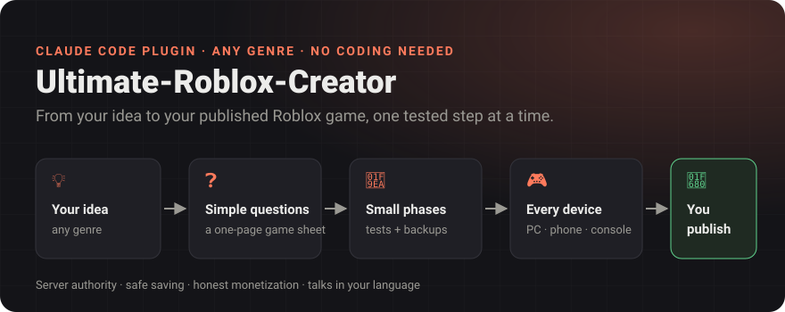

Make your own Roblox game with AI, even if you can't code
Ultimate-Roblox-Creator is a free, open-source Claude Code plugin. Tell it your idea and it asks a few simple questions, plans small phases, writes and tests the Luau code, and makes the game work on computer, phone, tablet and console. It talks to you in your language. You always publish.

What it does
Questions two or three at a time until a one-page game sheet is clear. No closed templates.
Numbered design decisions, each with a recommendation and its cost.
Automated tests, an independent review and a backup before touching player data.
One UI scale, touch buttons, PS5 and Xbox button names, readable text on phones.
No pressure to buy, odds shown for paid random items, purchases never delivered twice.
Uses the Roblox Studio MCP if connected, or gives you code to paste.
Quick start
You need Claude Code and Roblox Studio.
claude plugin marketplace add trevanix/ultimate-roblox-creator
claude plugin install ultimate-roblox-creator@trevanixOpen a new session and say: "I want to make a Roblox game where you're a penguin delivering pizzas. I can't code."
FAQ
Can I make a Roblox game with AI if I don't know how to code?
Yes. You describe the game and make the decisions; Claude writes and tests the Luau code and tells you what to click in Roblox Studio, one action at a time.
Does it only make simulator games?
No. It asks about your idea first, for any genre: obby, tycoon, horror, RPG, racing, survival or something new.
Does it work with Codex, Gemini CLI or Antigravity?
Yes, the 13 skills use the open Agent Skills format: copy them to ~/.agents/skills/
(Antigravity's global folder is ~/.gemini/config/skills/). The one-command install and the
4 reviewer agents are Claude Code only. How to copy them.
Will it publish my game or spend my Robux?
No. Publishing, prices and putting items on sale are always done by you.
¿Está en español?
Sí. Las instrucciones están en español y responde en tu idioma. Guía en el README.